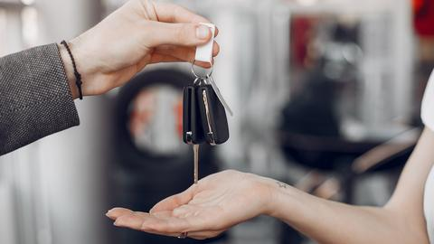

Opel · Kielce i okolice
Kluczyk Opel w Kielcach – Astra, Corsa, Insignia i nowsze modele
Kluczyk Opel do Astry, Corsy, Insignii czy Zafiry – zapasowy, w miejsce zgubionego albo w nowej obudowie – wykonamy i zakodujemy na miejscu postoju auta w Kielcach lub okolicy. Czy w Twoim Oplu da się to zrobić także bez żadnego kluczyka, sprawdzimy po numerze VIN – zadzwoń albo wyślij SMS.
Kluczyk Opel – jakie kluczyki spotyka się w Oplach
Kluczyk Opel dobieramy zawsze do konkretnego auta, bo przez ostatnie dwie dekady marka kilka razy zmieniała rozwiązania. W uproszczeniu można wyróżnić cztery grupy:
- Kluczyk ze stałym grotem – w starszych Oplach, z chipem immobilizera w główce, czasem z przyciskami pilota centralnego zamka.
- Kluczyk składany – „scyzoryk”, z którego grot wyskakuje po naciśnięciu przycisku; znany m.in. z Astry H, Corsy D i pierwszej Insignii.
- Kluczyk elektroniczny Open&Start – w części wersji auto otwiera się i uruchamia przyciskiem, a kluczyk zostaje w kieszeni. W obudowie ukryty jest grot awaryjny.
- Ople z czasów Stellantis – np. Corsa F, zbudowana na tej samej płycie podłogowej co Peugeot 208, korzysta z wielu rozwiązań wspólnych z Peugeotem i Citroënem. Więcej o nich na stronie kluczyki Peugeot i Citroën.
Podobny wygląd kluczyka nie oznacza tego samego sposobu kodowania – liczą się rocznik i wersja immobilizera. Dlatego przez telefon najpierw prosimy o numer VIN.
Typowe usterki kluczyków Opla
- Rozchwiany kluczyk składany – grot lata na boki albo nie wyskakuje, obudowa pęka przy zawiasie, gumowe przyciski się przecierają. Jeśli elektronika i chip działają, często wystarczy nowa obudowa – kiedy to ma sens, opisujemy w poradniku o pękniętej obudowie kluczyka.
- Pilot otwiera auto z coraz mniejszej odległości – zwykle słabnie bateria. Dla składanych kluczyków m.in. Astry H i Corsy D instrukcje podają baterię CR2032, a przy kluczyku elektronicznym część modeli sama pokazuje komunikat o słabej baterii.
- Open&Start nie wykrywa kluczyka – najczęściej winna jest bateria, rzadziej zakłócenia radiowe w konkretnym miejscu.
- Używany Opel z jednym kluczykiem – bez zapasu każda awaria albo zguba unieruchamia auto. Co sprawdzić po zakupie, podpowiadamy w poradniku o kluczykach w używanym aucie.
Dorabianie i kodowanie kluczyka Opel przy Twoim aucie
Przyjeżdżamy do Opla tam, gdzie stoi – pod dom, do pracy, na parking – i większość prac wykonujemy na miejscu. W zależności od sytuacji możemy:
- naciąć i zakodować zapasowy kluczyk do Astry, Corsy czy Zafiry, póki masz jeszcze działający egzemplarz (dorabianie i kodowanie kluczyków),
- wykonać nowy kluczyk od zera, gdy zgubiony kluczyk Opel był jedynym – w wielu modelach bez holowania auta (utrata wszystkich kluczyków),
- usunąć z pamięci auta kluczyki, których już nie masz, żeby nie uruchomiły silnika,
- przełożyć sprawną elektronikę do nowej obudowy albo zaproponować nowy kluczyk, gdy naprawa się nie opłaca,
- przeprowadzić otwieranie Opla z kluczykami zatrzaśniętymi w środku – głównie profesjonalnymi dekoderami do zamków, bez uszkadzania drzwi i szyb (otwieranie samochodów),
- sprawdzić immobilizer i sterownik, gdy auto mimo sprawnego kluczyka nie chce zapalić (sterowniki i immobilizery).
Nie w każdym Oplu wszystko da się zrobić przy aucie – decydują model, rocznik i system zabezpieczeń. Powiemy to przed przyjazdem, a cenę podamy przez telefon, zanim zaczniemy pracę.
Karta Car Pass i numer kluczyka
Do nowych Opli dołączano kartę Car Pass. Według instrukcji obsługi zawiera ona dane związane z zabezpieczeniem auta i należy ją przechowywać w bezpiecznym miejscu. Numer kluczyka, o który pyta się przy zamawianiu kolejnego egzemplarza, instrukcje wskazują właśnie w Car Pass albo na odłączanej przywieszce.
W używanych autach karta często ginie. To nie zawsze przekreśla dorobienie kluczyka, ale powiedz o tym przy pierwszym telefonie. Jeśli Car Pass masz, trzymaj go w domu, razem z zapasowym kluczykiem – nie w schowku auta.
Na spotkanie przy aucie weź:
- dowód osobisty i dowód rejestracyjny – przed kodowaniem i otwarciem sprawdzamy, czy auto należy do Ciebie,
- VIN z dowodu rejestracyjnego – przyda się już do wyceny przez telefon,
- wszystkie kluczyki, które mają dalej działać,
- Car Pass, jeśli go masz, oraz upoważnienie, gdy auto jest firmowe lub leasingowe.
Open&Start nie reaguje – co zrobić, zanim zadzwonisz
- Wysuń z kluczyka grot awaryjny – według instrukcji otworzysz nim drzwi kierowcy, gdy zawiedzie system Open&Start albo sam kluczyk.
- Instrukcje opisują też awaryjne uruchomienie silnika przy rozładowanym kluczyku: kluczyk przykłada się do oznaczenia wskazanego w instrukcji (w części modeli na osłonie kolumny kierownicy), wciska hamulec – w aucie z ręczną skrzynią także sprzęgło – i naciska przycisk Start/Stop. Miejsce i kolejność kroków sprawdź w opisie swojego Opla.
- Jeśli kłopot pojawia się tylko w jednym miejscu, np. na konkretnym parkingu, odsuń kluczyk od telefonu i innych pilotów – to może być zakłócenie.
Pozostałe wskazówki zebraliśmy w artykule kluczyk keyless nie działa. Jeśli nic nie pomaga – zadzwoń.
Usługi dla aut Opel

Otwieranie samochodów
Kluczyki zamknięte w kabinie lub bagażniku, rozładowany akumulator, zamek, który nie reaguje – otwieramy auto całą dobę.
Szczegóły
Dorabianie i kodowanie kluczy
Zapasowy kluczyk z chipem, pilot, keyless – dorabiamy i kodujemy, a zgubione kluczyki usuwamy z pamięci auta.
Szczegóły
Utrata wszystkich kluczyków
Nie został żaden kluczyk? Otwieramy auto, przygotowujemy i kodujemy nowy, a zgubiony usuwamy z pamięci.
Szczegóły
Sterowniki i immobilizery
Auto nie odpala lub nie widzi kluczyka – naprawa i wymiana sterownika silnika, prace przy immobilizerze.
SzczegółyPytania i odpowiedzi
Jedyny kluczyk do Opla zginął. Czy da się zrobić nowy?
Nie mam karty Car Pass – czy to problem?
Jaką baterię kupić do kluczyka Opla?
Czy kluczyk do nowej Corsy działa tak samo jak do starszej Astry?
Przydatne porady

Kluczyki samochodoweZapasowy kluczyk do samochodu – dlaczego warto go mieć
Jeździsz z jednym kluczykiem? Zapasowy kluczyk do samochodu zrobiony na spokojnie to niewielki wydatek w porównaniu z kłopotem, gdy jedyny kluczyk zginie albo się zepsuje.
Czytaj · 4 min Kluczyki samochodowe
Kluczyki samochodoweKluczyk keyless nie działa – co sprawdzić, zanim wezwiesz pomoc
Kluczyk keyless nie działa, a auto nie reaguje na klamkę ani przycisk START? Zanim pomyślisz o poważnej awarii, sprawdź kilka rzeczy – często winna jest bateria albo zwykłe zakłócenia.
Czytaj · 5 min Kluczyki samochodowe
Kluczyki samochodowePęknięta obudowa kluczyka samochodowego – naprawa czy nowy kluczyk?
Pęknięta obudowa kluczyka samochodowego to nie tylko kwestia wyglądu – z luźnej obudowy łatwo wypada bateria, płytka albo chip immobilizera. Podpowiadamy, kiedy wystarczy nowa obudowa, a kiedy lepiej zrobić nowy kluczyk.
Czytaj · 4 minInne marki
Nazwa marki Opel służy wyłącznie do opisu, do jakich aut wykonujemy usługi. Nie jesteśmy autoryzowanym serwisem tej marki.
Potrzebujesz pomocy teraz?
Zadzwoń – powiemy, ile to potrwa i ile będzie kosztować, zanim wyjedziemy.